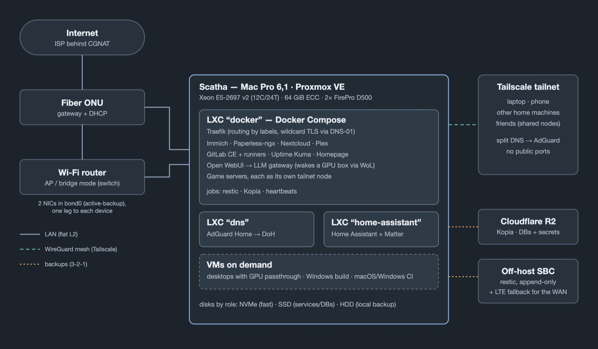

Proxmox, uma malha WireGuard, DNS dividido e backups 3-2-1 numa workstation de doze anos
Publicado em 7 de outubro de 2026
Desde junho de 2026, os serviços que hospedo em casa — fotos, documentos, Git, mídia, automação residencial, alguns servidores de jogo — rodam no Scatha, um Mac Pro 6,1 (Late 2013, a “lixeirinha”) rodando Proxmox VE direto no hardware. (Todas as minhas máquinas têm nome de dragão do Tolkien.) Ele é a terceira máquina a hospedar este stack — mais sobre isso abaixo. Em agosto o Mac Pro ganhou um Xeon E5-2697 v2 (12 núcleos, 24 threads) e 64 GiB de RAM ECC.
As duas GPUs FirePro D500 dele já renderam dois posts (o guia de passthrough e a caça ao bug no kernel). Este é sobre todo o resto: como o servidor está organizado, como ele se encaixa na rede e como é feito o backup, o monitoramento e a documentação.
containers rodando no stack principal
de fotos e acervo pessoal sob backup 3-2-1
serviços acessíveis pela internet pública
commits no repositório que documenta tudo isso
A primeira tentativa rodou no Smaug, um Particle Tachyon — um computador de placa única com um Qualcomm QCM6490 (ARM) — com um NVMe ADATA Legend 700 ligado pela NVMe Base da Pimoroni, uma placa que conecta o disco por um cabo flat PCIe. Esse cabo acabou sendo o ponto fraco. O link rodava numa única lane PCIe, e o sinal marginal gerava um fluxo constante de erros PCIe corrigíveis; somados ao ASPM, o modo de economia de energia do link, interrupções se perdiam de vez em quando, o disco travava em timeouts de I/O e, sob carga pesada (Docker, aprendizado de máquina e upload de fotos ao mesmo tempo), a placa reiniciava sozinha. Desabilitar o ASPM L1 e encurtar o timeout de I/O domou os sintomas, mas os erros em si nunca sumiram: vinham do cabo, não do software.
Depois, o stack foi para um Mac Mini M2 com OrbStack. Mas, em ARM, a parte de aprendizado de máquina da minha biblioteca de fotos rodava sob emulação x86, então em junho de 2026 ele mudou de novo, para x86 nativo no Scatha. Nada da primeira tentativa foi desperdiçado: o Legend 700 comprado para o Tachyon acompanhou todas as mudanças e hoje é o disco rápido do Scatha, com a biblioteca de fotos e o armazenamento do Docker — e o Smaug achou um trabalho em que é bom, como destino do backup externo descrito mais abaixo.

Visão geral da montagem: a rede local à esquerda, o servidor no centro, o acesso remoto e os destinos de backup à direita.
O Proxmox divide a máquina em alguns containers LXC (mais leves que VMs, compartilham o kernel do host) e em VMs que só ligam quando preciso:
O armazenamento está dividido em três discos por papel, não por conveniência: um NVMe para o que precisa ser rápido (a biblioteca de fotos e o armazenamento do próprio Docker), um SSD para serviços e bancos de dados ativos, e um HD mecânico que só guarda o repositório de backup local.
Esta é a parte que mais me ensinou. A rede de casa em si é simples: uma LAN plana, em que a ONU de fibra do provedor é o gateway e o servidor DHCP, e o roteador Wi-Fi roda em modo access point (bridge), servindo só como switch e Wi-Fi. A maior parte do trabalho foi no que fica por cima dela.
O Mac Pro tem duas portas Gigabit Ethernet, e as duas estão num bond Linux em modo active-backup. Cada perna vai para um equipamento diferente — uma para o roteador Wi-Fi, outra direto na ONU — de modo que nem o cabo, nem a porta, nem o switch são ponto único de falha. As duas pernas compartilham o mesmo MAC forçado, o que mantém a reserva DHCP do servidor, e portanto o IP, estável qualquer que seja a perna ativa. Testei o failover ao vivo, puxando cabos, e confirmei que ele sobrevive a um reboot.
Ele tem limites conhecidos, registrados em vez de ignorados: o monitoramento de
link (miimon) só percebe um link morto, não um roteador que está vivo mas perdeu o
uplink (o monitoramento por ARP pegaria isso, ao custo de mais complexidade com a bridge do Proxmox
por cima); e a própria ONU continua sendo ponto único de falha, como acontece com qualquer provedor
único.
Meu provedor coloca os clientes atrás de CGNAT: o IPv4 público é compartilhado com outros clientes, então redirecionamento de porta no roteador não funcionaria de qualquer jeito. Em vez disso, todo acesso remoto passa pelo Tailscale, uma VPN em malha construída sobre WireGuard: meu notebook e meu celular alcançam os serviços como se estivessem em casa, e nada fica exposto à internet.
Os servidores de jogo têm um detalhe a mais. Cada um roda com um pequeno container sidecar que entra na tailnet como um nó próprio e encaminha o tráfego para o jogo via DNAT. Isso permite compartilhar só aquele nó com a conta Tailscale de um amigo — ele entra no jogo e não enxerga mais nada da minha rede.
O AdGuard Home resolve nomes para a casa inteira, bloqueia anúncios e rastreadores e encaminha as consultas para o Quad9 via DNS-over-HTTPS. Depois que o upstream falhou 105 vezes numa semana, ele ganhou um fallback — DoH de um provedor diferente (Cloudflare), nunca o resolvedor do provedor de internet, para que a redundância seja de verdade.
Antes de ajustar qualquer coisa, medi: um nome interno ou um acerto de cache responde em 0 ms, e uma consulta fria em 52 ms, contra um tempo de ida e volta de 54,7 ms até o Quad9 — ou seja, uma consulta já custa exatamente uma ida e volta, que é o piso físico. Isso descartou várias “otimizações”: trocar o transporte, trocar de provedor e consultar dois upstreams em paralelo, que cortaria a cauda lenta mas mandaria toda consulta fria para uma segunda empresa, um custo real de privacidade por um ganho cosmético. O único ajuste que importou foi um TTL mínimo de cache de 60 s — e não mais que isso, porque a CDN da Steam usa TTL de 1 segundo para balanceamento e os servidores de jogo se atualizam por ela a cada boot.
Uma noite, o resolvedor DNS da ONU ficou mudo por 48 minutos enquanto a
conectividade IP continuava de pé — e derrubou junto o backup externo daquele dia. Desde então o
host e o container principal resolvem pelo AdGuard, com o Quad9 direto de reserva, fixados na
configuração do cliente DHCP em vez do resolv.conf (que o cliente DHCP reescreve a cada
renovação). Essa mudança trouxe sua própria lição: o cliente DHCP só lê a configuração quando
inicia, então validar logo depois de editar não prova nada — isso me custou uma hora com
o servidor fora da rede até o procedimento ficar certo.
O split DNS do Tailscale manda meus domínios internos para o AdGuard, que os aponta para o Traefik. O Traefik tem um certificado curinga do Let’s Encrypt obtido pelo desafio DNS-01, que prova a posse do domínio por um registro DNS em vez de uma requisição HTTP — assim, serviços que nunca tocam a internet pública ainda têm HTTPS válido.
Editar a configuração de rede de uma máquina por SSH é um bom jeito de perder o acesso a ela. Antes de aplicar qualquer mudança, armo um timer que restaura automaticamente a configuração anterior depois de cinco minutos, aplico a mudança desacoplada da sessão SSH e só cancelo o timer depois de entrar de novo por uma conexão nova. Se todo o resto falhar, o host continua alcançável pelo seu endereço IPv6 link-local, que não depende de DHCP.
Dois sistemas complementares, cada um adequado ao tipo de dado que protege:
Também há um exercício de restauração, porque um backup que nunca foi restaurado é só uma hipótese.
O problema mais interessante aqui não foi uma falha, mas crescimento: o
repositório local passou a ganhar uns 10 GiB por dia sem dado novo que justificasse. Comparar os
snapshots apontou dois culpados. Os dumps de banco eram reenviados quase inteiros toda noite, porque o
pg_dump grava as linhas na ordem física, que as atualizações constantes ficam
embaralhando, então a deduplicação não ajuda; eles já eram função do outro sistema de backup e saíram
deste. E o arquivo de backup do próprio GitLab carregava 13 GB de artefatos de CI com um nome de
arquivo novo a cada dia; pular os artefatos o reduziu de 15,2 para 2,8 GB, com o
código em si continuando coberto.
A camada interna é o Uptime Kuma, que vigia serviços, containers e backups e alerta no Telegram. Mas ele mora na mesma máquina que vigia — se o servidor inteiro morrer, ele morre junto, em silêncio. Por isso existe uma camada externa: o healthchecks.io recebe um heartbeat do host e do container principal a cada 15 minutos, mais um sinal de cada backup quando ele termina. Se os heartbeats param, o alerta vem de fora, e qual deles parou já estreita a causa.
Toda a montagem vive num repositório Git hospedado no próprio GitLab do servidor: arquivos Compose, scripts, units do systemd e, acima de tudo, documentação — uma referência operacional, runbooks, relatos de incidentes e um documento de design antes de cada mudança não trivial (dezenas deles até agora). Quando uma afirmação da documentação envelhece — uma máquina descrita como offline que na verdade voltou, uma correção descrita como solução de um problema que ela não resolveu — a correção é registrada explicitamente, em vez de reescrever a história em silêncio.
Uma nota sobre como isto foi escrito: a montagem, as decisões e as medições descritas acima são minhas; boa parte da operação prática foi feita com o Claude Code como assistente, sob minha direção. O texto em si foi redigido e editado com o auxílio de IA generativa (Claude), a partir das minhas anotações e do histórico real do repositório.